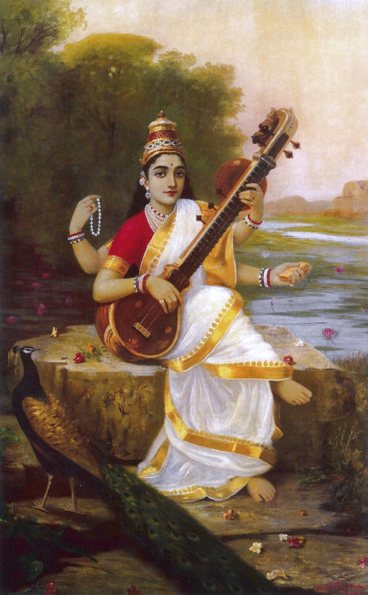

Saraswati
Veena, white lotus, and swan — symbols of harmony, purity, and viveka (discernment).

वसंत पंचमी
Spring’s yellow morning — Saraswati, learning, and the first hint of Holi’s season.
वसंत पंचमी पर सरस्वती जी की पूजा — छात्र–अभिभावक पूजा विधि खोजते हैं; प्रवास में अक्षरारंभ समारोह लोकप्रिय हैं।
Vasant Panchami (Sri Panchami) welcomes spring and worships Saraswati Ji, goddess of speech, music, and learning. It is heavily searched by students and parents for puja vidhi, and abroad for children’s ‘first pen’ ceremonies.
इस तिथि सरस्वती कृपा से वाणी खिलती है। सरसों के पीले खेत उत्तरी भारत में ज्ञान के पकने का रूपक बनते हैं। कुछ क्षेत्रों में यह होली–कृष्ण लीला की तैयारी भी है।
On this tithi, many tellings say Saraswati’s grace makes the world eloquent — rivers of knowledge unfrozen after winter. Basant’s mustard fields colour the North yellow; devotees wear that hue as living metaphor for ripening insight. In some regions the day also marks early preparations toward Holi’s playful devotion to Krishna.
सरस्वती वाक् और विद्या हैं — मंत्र व संगीत को शोर होने से बचाती स्पष्टता की नदी। पुस्तकें–वाद्य उसके पास रखकर घर जिज्ञासा का मंदिर बनाते हैं।
Saraswati is vac (speech) and vidya (disciplined knowing). Mythologically she is the river of clarity that keeps mantra and music from becoming noise. Books, instruments, and tools of study are placed near her image — a household pantheon of curiosity.
Veena, white lotus, and swan — symbols of harmony, purity, and viveka (discernment).
विदेशी विश्वविद्यालय और भारतीय संघ बसंत सांस्कृतिक कार्यक्रम रखते हैं — परीक्षा से पूर्व आशीष।
Universities and Indian associations abroad host Basant cultural hours — kite crafts, yellow scarves, and student blessings before exam season.
Save this festival to My Board to track ticks there.
Spring’s yellow morning — Saraswati, learning, and the first hint of Holi’s season.
Wear yellow/cream if custom allows; offer yellow flowers and sweets Place books and instruments for Saraswati puja; do aksharabhyas for children Sing Saraswati aarti or vandana; begin a gentle study vow Avoid disrespect to books for the day — a simple household maryada
Saraswati is vac (speech) and vidya (disciplined knowing). Mythologically she is the river of clarity that keeps mantra and music from becoming noise. Books, instruments, and tools of study are placed near her image — a household pantheon of curiosity.
Help us validate this page: suggest a correction, add a detail, or highlight something useful for home puja readers.
Feedback is emailed to TirthaYatra for editorial review. It is not published live automatically (safer for quality and ads policy). You can also keep a personal copy on this device.